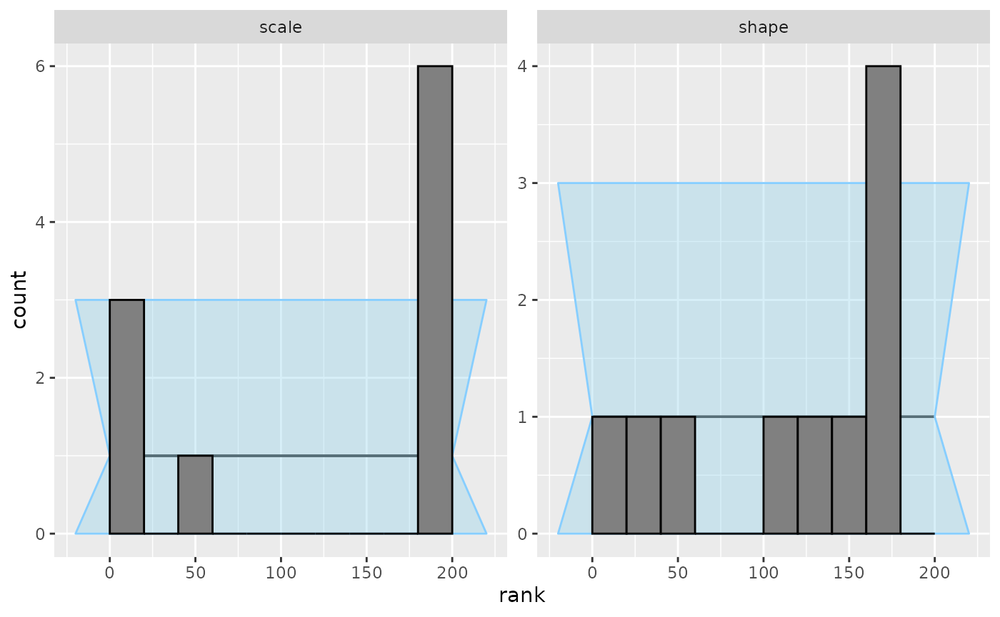
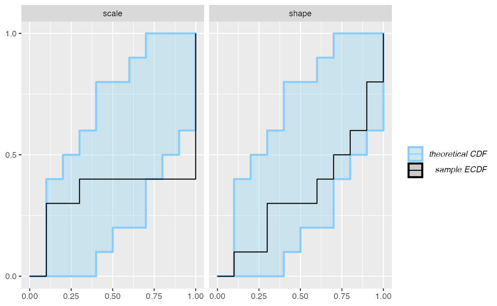
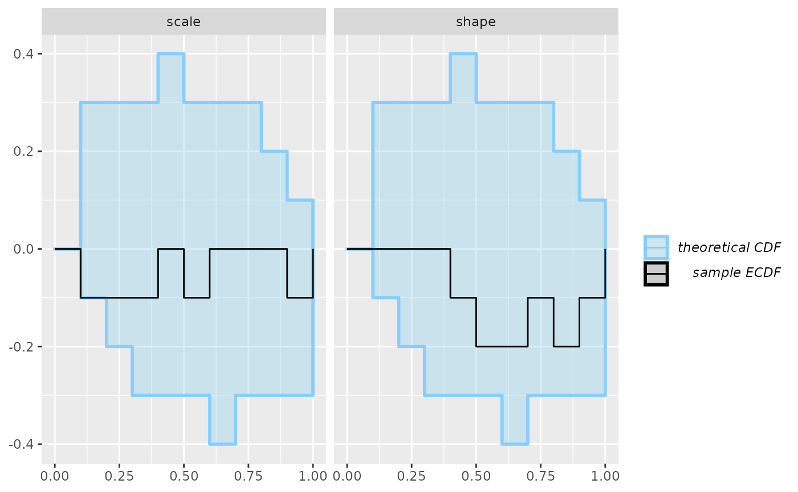
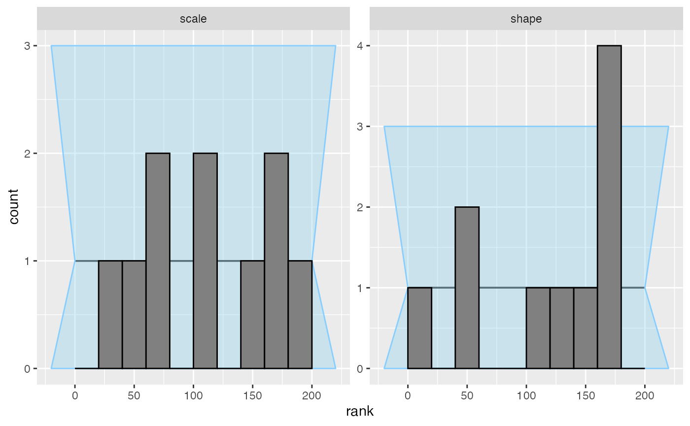

Discovering bad parametrization with SBC
bad_parametrization.RmdPremise: we mistakenly assume that Stan does parametrize the normal distribution via mean and precision (like JAGS or INLA do). Since we want to put prior on the standard deviation (as is suggested on the prior choice wiki), we take standard deviation as the parameter and transform to precision \(\tau = \frac{1}{\sigma^2}\).
TODO maybe start with prior predictive check to tune priors?
stan_code_1 <- "
data {
int N;
vector<lower=0>[N] y;
}
parameters {
real<lower = 0> shape;
real<lower = 0> scale;
}
model {
y ~ gamma(shape, scale);
shape ~ lognormal(0, 1);
scale ~ lognormal(0, 1.5);
}
"
iter_warmup <- 1000
iter_sampling <- 1000
if(use_cmdstanr) {
model_gamma <- cmdstan_model(write_stan_file(stan_code_1))
backend_gamma <- SBC_backend_cmdstan_sample(
model_gamma, iter_warmup = iter_warmup, iter_sampling = iter_sampling, chains = 2)
} else {
model_gamma <- stan_model(model_code = stan_code_1)
backend_gamma <- SBC_backend_rstan_sample(
model_gamma, iter = iter_sampling + iter_warmup, warmup = iter_warmup, chains = 2)
}Build a generator to create simulated datasets.
set.seed(21448857)
n_datasets <- 10
single_dataset_gamma <- function(N) {
shape <- rlnorm(n = 1, meanlog = 0, sdlog = 1)
scale <- rlnorm(n = 1, meanlog = 0, sdlog = 1.5)
y <- rgamma(N, shape = shape, scale = scale)
list(
parameters = list(
shape = shape,
scale = scale),
generated = list(
N = N,
y = y)
)
}
generator_gamma <- SBC_generator_function(single_dataset_gamma, N = 40)
datasets_gamma <- generate_datasets(
generator_gamma,
n_datasets)
results_gamma <- compute_results(datasets_gamma, backend_gamma)## - 9 (90%) fits had some steps rejected. Maximum number of rejections was 6.## Not all diagnostics are OK. You can learn more by inspecting $default_diagnostics, $backend_diagnostics and/or investigating $outputs/$messages/$warnings for detailed output from the backend.10 simulations are enough to see something is wrong with the model. The problem is best seen on an ecdf_diff plot - we even see the issue is primarily with the scale parameter!
plot_ecdf_diff(results_gamma) However, we can use the rank histogram (with suitable number of bins) and the
However, we can use the rank histogram (with suitable number of bins) and the ecdf plot to show different visualisations of the same problem. The rank histogram often tends to be intuitively more understandable than the ecdf plots, but tweaking the number of bins is often necessary and the confidence interval is only approximate and has decreased sensitivity.
plot_rank_hist(results_gamma, bins = 10)
plot_ecdf(results_gamma)
So we see that the simulation does not match the model. In practice, the problem may lie with the simulation, with the model or both. Here, we’ll assume that the simulation is correct - we really wanted to work with scale and fix the model to match. I.e. we still represent scale in our model, but invert it to get rate before using Stan’s gamma distribution:
stan_code_2 <- "
data {
int N;
vector<lower=0>[N] y;
}
parameters {
real<lower = 0> shape;
real<lower = 0> scale;
}
model {
y ~ gamma(shape, inv(scale));
shape ~ lognormal(0, 1);
scale ~ lognormal(0, 1.5);
}
"
if(use_cmdstanr) {
model_gamma_2 <- cmdstan_model(write_stan_file(stan_code_2))
backend_gamma_2 <- SBC_backend_cmdstan_sample(
model_gamma_2, iter_warmup = iter_warmup, iter_sampling = iter_sampling, chains = 2)
} else {
model_gamma_2 <- stan_model(model_code = stan_code_2)
backend_gamma_2 <- SBC_backend_rstan_sample(
model_gamma_2, iter = iter_sampling + iter_warmup, warmup = iter_warmup, chains = 2)
}
results_gamma2 <- compute_results(datasets_gamma, backend_gamma_2)## - 2 (20%) fits had at least one Rhat > 1.01. Largest Rhat was 1.011.## - 10 (100%) fits had some steps rejected. Maximum number of rejections was 6.## Not all diagnostics are OK. You can learn more by inspecting $default_diagnostics, $backend_diagnostics and/or investigating $outputs/$messages/$warnings for detailed output from the backend.No obvious problems here, but if we wanted to be sure, we should have ran a lot more simulations.
plot_ecdf_diff(results_gamma2)
plot_rank_hist(results_gamma2, bins = 10)
plot_ecdf(results_gamma2)